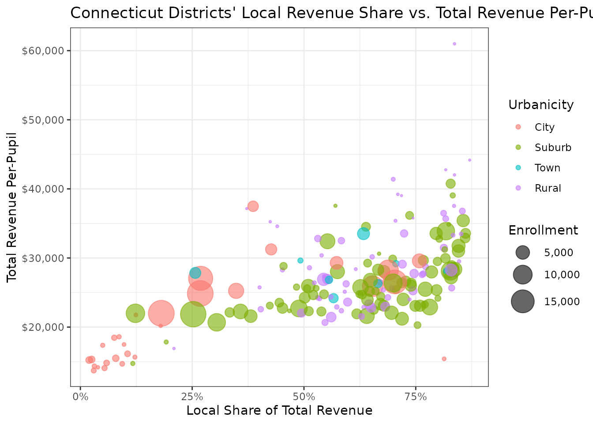

Introduction
The edfinr package provides a simple interface for
accessing school district finance data with an opinionated data cleaning
methodology: NCES F-33 revenues and expenditures joined with enrollment,
poverty, community, and labor-cost measures for U.S. school districts.
This vignette will help you get started with the package’s core
functionality.
What’s new in 0.2.0
If you used edfinr 0.1.x, you’ll notice three
significant changes:
-
Added FY23 data: Coverage now extends through the
2022-23 school year, and
get_finance_data()defaults toyr = "2023". - More variables across years: The datasets add capital outlay detail, debt stocks, fund balances, and the NCES Comparable Wage Index for Teachers (CWIFT), each covered by a dedicated article on the package website. - Faster downloads: Downloads are now per-year files, so small requests transfer only the years they need.
Refer to the NEWS.md file for the full list of updates.
Core function: get_finance_data()
The primary function in edfinr is
get_finance_data(), which provides access to school finance
data from school years 2011-12 through 2022-23. NCES F-33 data are
released roughly two years after a fiscal year closes, so FY2023
(SY2022-23) is the most recent federal release. The function combines
data from multiple sources:
- Financial data: Revenue and expenditure data (including capital outlay, debt, and fund balances) from the National Center for Education Statistics (NCES) version of the F-33 survey.
- Enrollment: Fall membership counts (F-33 item V33), the denominator for all per-pupil measures.
- Demographics: Poverty estimates from the U.S. Census Bureau Small Area Income and Poverty Estimates (SAIPE).
- Community characteristics: Income and education data from American Community Survey (ACS).
- Labor costs: The NCES EDGE Comparable Wage Index for Teachers (CWIFT).
- Inflation adjustments: Consumer Price Index for All Urban Consumers (CPI-U) data for constant dollar calculations.
Basic usage
The simplest way to use get_finance_data() is to specify
a year and state. For example, to get finance data for Kentucky school
districts from the 2022-23 school year:
# download "skinny" dataset for a single year and a single state
ky_sy23 <- get_finance_data(yr = "2023", geo = "KY")
# view the structure of the returned data
glimpse(ky_sy23)## Rows: 171
## Columns: 59
## $ ncesid <chr> "2100030", "2100070", "2100081", "2100090", "210012…
## $ year <int> 2023, 2023, 2023, 2023, 2023, 2023, 2023, 2023, 202…
## $ state <chr> "KY", "KY", "KY", "KY", "KY", "KY", "KY", "KY", "KY…
## $ dist_name <chr> "Adair County", "Allen County", "Muhlenberg County"…
## $ enroll <dbl> 2622, 3149, 4486, 405, 3752, 3261, 317, 1052, 692, …
## $ rev_total_pp <dbl> 14490.85, 14258.18, 15921.53, 27017.28, 13804.90, 1…
## $ rev_local_pp <dbl> 2803.204, 2772.626, 4959.206, 17746.180, 4358.475, …
## $ rev_state_pp <dbl> 8819.222, 8033.344, 8473.696, 8560.875, 7578.625, 8…
## $ rev_fed_pp <dbl> 2868.4211, 3452.2070, 2488.6313, 710.2285, 1867.803…
## $ rev_total <dbl> 37995000, 44899000, 71424000, 10942000, 51796000, 5…
## $ rev_local <dbl> 7350000, 8731000, 22247000, 7187203, 16353000, 1127…
## $ rev_state <dbl> 23124000, 25297000, 38013000, 3467155, 28435000, 27…
## $ rev_fed <dbl> 7521000.0, 10871000.0, 11164000.0, 287642.6, 700800…
## $ rev_total_unadj <dbl> 38897000, 45331000, 73317000, 11348000, 52150000, 5…
## $ rev_local_unadj <dbl> 7350000, 8731000, 22728000, 7446000, 16361000, 1127…
## $ rev_state_unadj <dbl> 24026000, 25729000, 39425000, 3604000, 28781000, 28…
## $ rev_fed_unadj <dbl> 7521000, 10871000, 11164000, 298000, 7008000, 12719…
## $ rev_state_unadj_pp <dbl> 9163.234, 8170.530, 8788.453, 8898.765, 7670.842, 8…
## $ rev_local_unadj_pp <dbl> 2803.204, 2772.626, 5066.429, 18385.185, 4360.608, …
## $ rev_state_cap_debt <dbl> 902000, 432000, 1412000, 12000, 346000, 545000, 299…
## $ exp_cur_pp <dbl> 13545.00, 12352.49, 13648.24, 25486.42, 12208.16, 1…
## $ exp_cap_total_pp <dbl> 954.6148, 742.4579, 1251.2260, 506.1728, 352.0789, …
## $ rev_exp_pp_diff <dbl> 945.8429, 1905.6843, 2273.2947, 1530.8642, 1596.748…
## $ exp_cur_st_loc <dbl> 30583000, 33757000, 44193000, 10001000, 36509000, 4…
## $ exp_cur_fed <dbl> 4871000, 5142000, 15670000, 320000, 4970000, 769300…
## $ exp_cur_resa <dbl> NA, NA, NA, NA, NA, NA, NA, NA, NA, NA, NA, NA, NA,…
## $ exp_cur_total <dbl> 35515000, 38898000, 61226000, 10322000, 45805000, 4…
## $ exp_cap_total <dbl> 2503000, 2338000, 5613000, 205000, 1321000, 1014000…
## $ cpi_sy12 <dbl> 1.316923, 1.316923, 1.316923, 1.316923, 1.316923, 1…
## $ mhi <dbl> 50316, 59029, 52672, 209250, 71747, 54263, 44688, 6…
## $ mean_hhi <dbl> 67346.51, 77189.80, 77400.74, 300224.55, 88198.54, …
## $ mpv <dbl> 134800, 176300, 121300, 808100, 213200, 130300, 115…
## $ adult_pop <dbl> 12806, 14649, 21925, 1547, 16682, 15469, 1120, 5512…
## $ ba_plus_pop <dbl> 2402, 2546, 2844, 1219, 4290, 3819, 214, 1028, 486,…
## $ ba_plus_pct <dbl> 0.1875683, 0.1738003, 0.1297149, 0.7879767, 0.25716…
## $ gini <dbl> 0.4840, 0.4595, 0.4853, 0.5020, 0.4053, 0.4698, 0.4…
## $ owner_pct <dbl> 0.7622388, 0.7674478, 0.8193851, 0.9395405, 0.77948…
## $ snap_pct <dbl> 0.15702834, 0.13003057, 0.15020524, 0.01088271, 0.0…
## $ unemp_rate <dbl> 0.07738380, 0.07532628, 0.04063083, 0.04275742, 0.0…
## $ total_pop <dbl> 19264, 21788, 30568, 2581, 24613, 21580, 1378, 7582…
## $ student_pop <dbl> 2862, 3702, 4726, 461, 4324, 3533, 220, 1153, 403, …
## $ stpov_pop <dbl> 763, 790, 1189, 11, 487, 843, 47, 241, 143, 473, 92…
## $ stpov_pct <dbl> 0.26659679, 0.21339816, 0.25158697, 0.02386117, 0.1…
## $ cong_dist <int> 2101, 2101, 2101, 2103, 2106, 2104, 2104, 2101, 210…
## $ state_leaid <chr> "KY-001001000", "KY-002005000", "KY-089445000", "KY…
## $ county <chr> "Adair County", "Allen County", "Muhlenberg County"…
## $ cbsa <chr> "N", "14540", "16420", "31140", "23180", "26580", "…
## $ urbanicity_raw <int> 33, 41, 41, 21, 32, 13, 42, 43, 33, 32, 41, 42, 21,…
## $ urbanicity_raw_cat <fct> "Town, Remote", "Rural, Fringe", "Rural, Fringe", "…
## $ urbanicity <fct> Town, Rural, Rural, Suburb, Town, City, Rural, Rura…
## $ land_area_sq_mi <dbl> 405.292, 343.724, 467.280, 2.991, 202.260, 13.437, …
## $ s_per_sq_mi <dbl> 6.469410, 9.161420, 9.600240, 135.406219, 18.550381…
## $ schlev <chr> "03", "03", "03", "01", "03", "03", "03", "03", "03…
## $ lea_type <fct> Regular public school district that is not a compon…
## $ lea_type_id <int> 1, 1, 1, 1, 1, 1, 1, 1, 1, 1, 1, 1, 1, 1, 1, 1, 1, …
## $ osp_pct <dbl> 0.0000000000, 0.0000000000, 0.0000000000, 0.0347197…
## $ c11_spike_flag <lgl> FALSE, FALSE, FALSE, FALSE, FALSE, FALSE, FALSE, FA…
## $ cwift_est <dbl> 0.705, 0.833, 0.829, 0.915, 0.804, 0.847, 0.733, 0.…
## $ cwift_imputed <lgl> TRUE, TRUE, TRUE, TRUE, TRUE, TRUE, TRUE, TRUE, TRU…Dataset types: skinny vs. full
By default, get_finance_data() returns a “skinny”
dataset with 59 essential variables covering:
- District identifiers and characteristics.
- Total revenues by source (local, state, federal).
- Current expenditures and total capital outlay
(
exp_cap_total,exp_cap_total_pp). - Key demographic and economic indicators (including the CWIFT teacher-wage index).
- District land area and student density
(
land_area_sq_mi,s_per_sq_mi).
For more detailed analysis, you can request the “full” dataset with 124 variables that includes:
- All skinny dataset variables.
- Detailed expenditure data.
- Data on spending of temporary pandemic-related federal funding.
- Detailed capital outlay, debt stocks, and fund balances (see the “Capital and Facilities” article).
- The CWIFT standard error and imputation method (see the “CWIFT” article).
# download the full dataset with detailed expenditure data for a single year/state
ky_full_sy23 <- get_finance_data(yr = "2023", geo = "KY", dataset_type = "full")
# the full dataset adds detailed expenditure, capital, debt, and CWIFT variables
setdiff(names(ky_full_sy23), names(ky_sy23))## [1] "exp_emp_salary" "exp_emp_bene"
## [3] "exp_textbooks" "exp_utilities"
## [5] "exp_tech_supp" "exp_tech_equip"
## [7] "exp_pay_private_sch" "exp_pay_charter_sch"
## [9] "exp_pay_other_lea" "exp_other_sys_pay"
## [11] "exp_instr_total" "exp_instr_sal"
## [13] "exp_instr_bene" "exp_supp_stu_total"
## [15] "exp_supp_stu_sal" "exp_supp_stu_bene"
## [17] "exp_supp_instr_total" "exp_supp_instr_sal"
## [19] "exp_supp_instr_bene" "exp_supp_gen_admin_total"
## [21] "exp_supp_gen_admin_sal" "exp_supp_gen_admin_bene"
## [23] "exp_supp_sch_admin_total" "exp_supp_sch_admin_sal"
## [25] "exp_supp_sch_admin_bene" "exp_supp_ops_total"
## [27] "exp_supp_ops_sal" "exp_supp_ops_bene"
## [29] "exp_supp_trans_total" "exp_supp_trans_sal"
## [31] "exp_supp_trans_bene" "exp_central_serv_total"
## [33] "exp_central_serv_sal" "exp_central_serv_bene"
## [35] "exp_noninstr_food_total" "exp_noninstr_food_sal"
## [37] "exp_noninstr_food_bene" "exp_noninstr_ent_ops_total"
## [39] "exp_noninstr_ent_ops_bene" "exp_noninstr_other"
## [41] "exp_covid_total" "exp_covid_instr"
## [43] "exp_covid_supp" "exp_covid_cap_out"
## [45] "exp_covid_tech_supp" "exp_covid_tech_equip"
## [47] "exp_covid_supp_plant" "exp_covid_food"
## [49] "exp_cap_construction" "exp_cap_land"
## [51] "exp_cap_equip_instr" "exp_cap_equip_other"
## [53] "exp_cap_equip_nonspec" "exp_debt_interest"
## [55] "debt_lt_begin" "debt_lt_issued"
## [57] "debt_lt_retired" "debt_lt_end"
## [59] "debt_st_begin" "debt_st_end"
## [61] "fund_bal_debt_svc" "fund_bal_bond"
## [63] "fund_bal_other" "cwift_se"
## [65] "cwift_impute_method"Finding variables
With 124 variables in the full dataset, the data dictionary is the
fastest way to find what you need. list_variables() returns
it as a tibble, so you can filter and search it like any other data.
# the full dictionary: name, type, category, source, f33_item,
# first_yr_avail, and description for every variable
vars <- list_variables("full")
vars## # A tibble: 124 × 7
## name type category source f33_item first_yr_avail description
## <chr> <chr> <chr> <chr> <chr> <chr> <chr>
## 1 ncesid character id NCES … LEAID 2012 NCES distr…
## 2 year integer time NCES … YRDATA 2012 School yea…
## 3 state character geographic NCES … STATE 2012 State abbr…
## 4 dist_name character id NCES … NAME 2012 District n…
## 5 enroll numeric demographic NCES … V33 2012 Total dist…
## 6 rev_total_pp numeric revenue NCES … NA 2012 Total adju…
## 7 rev_local_pp numeric revenue NCES … NA 2012 Local adju…
## 8 rev_state_pp numeric revenue NCES … NA 2012 State adju…
## 9 rev_fed_pp numeric revenue NCES … NA 2012 Federal ad…
## 10 rev_total numeric revenue NCES … NA 2012 Total adju…
## # ℹ 114 more rows
# filter by category; 0.2.0 adds "debt" and "cwift" categories
list_variables("full", category = "debt")## # A tibble: 9 × 7
## name type category source f33_item first_yr_avail description
## <chr> <chr> <chr> <chr> <chr> <chr> <chr>
## 1 debt_lt_begin numeric debt NCES F… _19H 2012 Long-term …
## 2 debt_lt_issued numeric debt NCES F… _21F 2012 Long-term …
## 3 debt_lt_retired numeric debt NCES F… _31F 2012 Long-term …
## 4 debt_lt_end numeric debt NCES F… _41F 2012 Long-term …
## 5 debt_st_begin numeric debt NCES F… _61V 2012 Short-term…
## 6 debt_st_end numeric debt NCES F… _66V 2012 Short-term…
## 7 fund_bal_debt_svc numeric debt NCES F… W01 2012 Debt servi…
## 8 fund_bal_bond numeric debt NCES F… W31 2012 Bond fund …
## 9 fund_bal_other numeric debt NCES F… W61 2012 Other fund…Multiple years and states
The get_finance_data() function makes it easy to access
data across multiple years and states:
# get data for multiple states across multiple years
sec_data <- get_finance_data(
yr = "2019:2023", # years 2019 through 2023
geo = "AL,AR,FL,GA,KY,LA,MS,MO,OK,SC,TN,TX" # comma-separated state codes
)
# get the most recent year of data for all states
us_sy23 <- get_finance_data(yr = "2023", geo = "all")Downloads and caching
Only the requested year(s) are downloaded: each year is hosted as its
own file (roughly 3-6 MB), so a single-year or short-range request is
lightweight even though the full panel spans 2012-2023. Requesting
yr = "all" downloads the entire history from one combined
file.
Downloaded files are cached in R’s temporary directory for the length
of your R session, so repeated calls with the same years re-read the
cache instead of re-downloading. Two arguments control this behavior:
refresh = TRUE forces a fresh download (for example, after
a data update is announced), and quiet = TRUE suppresses
the download progress messages.
# re-download even if a cached copy exists, without progress messages
ky_fresh <- get_finance_data(yr = "2023", geo = "KY", refresh = TRUE, quiet = TRUE)Working with the data
Once you’ve retrieved the data, you can use standard data manipulation tools to analyze it. Here are some common analysis patterns:
Do high local revenue share districts end up with more total revenue?
# download 2023 data for connecticut
ct_sy23 <- get_finance_data(yr = "2023", geo = "CT")
# plot local share of revenue vs. total revenue w/ urbanicity + enrollment
ggplot(ct_sy23) +
geom_point(aes(
x = rev_local / rev_total,
y = rev_total_pp,
color = urbanicity,
size = enroll),
alpha = .6) +
scale_size_area(
max_size = 10,
labels = scales::label_comma()
) +
scale_x_continuous(labels = scales::label_percent()) +
scale_y_continuous(labels = scales::label_dollar()) +
labs(
title = "Connecticut Districts' Local Revenue Share vs. Total Revenue Per-Pupil, SY2022-23",
x = "Local Share of Total Revenue",
y = "Total Revenue Per-Pupil",
size = "Enrollment",
color = "Urbanicity") +
theme_bw()
How do revenue sources differ by urbanicity?
# compare revenue mix across urbanicity groups (dollar-weighted)
revenue_analysis <- ct_sy23 |>
group_by(urbanicity) |>
summarize(
pct_local = sum(rev_local, na.rm = TRUE) / sum(rev_total, na.rm = TRUE),
pct_state = sum(rev_state, na.rm = TRUE) / sum(rev_total, na.rm = TRUE),
pct_federal = sum(rev_fed, na.rm = TRUE) / sum(rev_total, na.rm = TRUE),
n_districts = n(),
enrollment = sum(enroll, na.rm = TRUE)
)
print(revenue_analysis)## # A tibble: 4 × 6
## urbanicity pct_local pct_state pct_federal n_districts enrollment
## <fct> <dbl> <dbl> <dbl> <int> <dbl>
## 1 City 0.434 0.442 0.124 29 127596
## 2 Suburb 0.644 0.289 0.0675 85 288189
## 3 Town 0.553 0.361 0.0859 8 14999
## 4 Rural 0.671 0.282 0.0476 65 53056See also
- The “CPI Adjustments” vignette for inflation adjustment across years.
- The “Data Sources and Methodology” vignette for detailed methodology and the F-33 crosswalk.
- On the package website: articles on capital and facilities, CWIFT, COVID relief spending, community and economic context, data quality and comparability, and mapping school finance data.